v0.2 Pre-release · open source, Apache 2.0
Your AI asks about the file.
It never reads it.
Let Claude Code, Codex, Cursor or Gemini CLI check a file it must never see: the agent only ever gets 1s and 0s.
lockfile puts a human-held console between your AI agent and the files in S3, on an SFTP server or in a local directory. The agent asks fixed yes/no questions: is this file empty, does it start like a PDF, does it parse, does it have a blank page, does it look truncated? The console, running in a separate OS account, waits for your approval, fetches the file, runs signed, sandboxed plugins on it, and returns each plugin’s answer: 1, 0, or no answer. No byte of the file, its size, type or path ever reaches the agent.
- Console on Linux (Landlock, seccomp)
- Agent side on Linux and macOS
- amd64 and arm64
- S3, SFTP, local directory
- Apache 2.0
See it run

lockfile account) shows you the plan and waits for your y, fetches the file into the sandbox, and sends back one bit per plugin. The agent never gets the file, its name, size, type or path.What the agent gets
One plan, two questions about one file. The agent names the key it was given and the plugins it wants; this is the whole answer:
$ lockfile plan --key invoices/2026/10/abc123.pdf \
--plugin file.non-empty --plugin format.is-pdf --run --json
{"handle":"f_8Kq2xR","answers":[
{"plugin":"file.non-empty","version":"1.0.0","official":true,"result":1},
{"plugin":"format.is-pdf","version":"1.0.0","official":true,"result":0}]}The file is not empty and does not start like a PDF. "result": null with "error": "plugin_error" means the plugin gave no answer: it is not a 0. The exit code depends on the outcome only, never on an answer.
Why lockfile?
Some files must not reach a model: invoices, contracts, medical letters, anything with personal data. Yet an agent debugging a pipeline often needs to know one thing about one of them: did it arrive empty, is it a broken PDF, is a page blank? Giving the agent read access answers that and leaks everything else. lockfile answers the question and nothing else.
| Property | Agent reads the file | lockfile |
|---|---|---|
| Agent never sees a byte of the file | No | Yes |
| Agent never sees the name, size, type or a listing | No | Yes |
| Agent never holds the storage credentials | No | Yes |
| A human approves every plan, outside the agent | No | Yes |
| Every question is fixed and signed in advance | No | Yes |
| The code that reads the file has no network | No | Yes |
| Answers released on a fixed time quantum | No | Yes |
| Append-only audit of every fetch and outcome | No | Yes |
The agent only ever sees 1s and 0s about a file.
See what you approve
Before anything is fetched, the console shows you the plan and waits. The screen holds the agent’s own request and the plugins’ signed questions, never anything about the file: at this point no source has been touched.
╭─ SAMPLES · file plan · 2 answers ─────
│ requested by uid 1000 (alice) · pid 48211 · exe /usr/local/bin/lockfile
│ agent: check the invoice reported as blank
│
│ key invoices/2026/10/abc123.pdf
│
│ file.non-empty@1.0.0 (official)
│ ? Does the file contain at least one byte? 1 = size > 0 0 = the file is empty
│ format.is-pdf@1.0.0 (official)
│ ? Does the file start like a PDF? 1 = `%PDF-` appears within the first 1024 bytes 0 = no PDF header
│
│ this plan reveals at most 2 answers about the file
╰─ Approve? [y/N]On a production profile you type the profile name, not y. n <reason> denies; the reason is never forwarded to the agent.
Highlights
Only 1s and 0s
Everything the console sends the agent comes from a closed list, checked end to end over the socket. No size, type, hash, name, listing or error text.
Human in the loop
Every plan is approved in a console the agent cannot drive, in an OS account it cannot read. The screen says how many answers the plan reveals.
Signed questions
Each plugin answers one question fixed in its signed manifest. No parameters: a parameter would let the agent aim the bit at the content.
Sandboxed plugins
Landlock, seccomp and rlimits: the file as a read-only fd 3, no path, no network, an empty environment, stdout capped at 3 bytes.
cosign everywhere
Plugins, the marketplace index and lockfile’s own releases are checked against keyless cosign signatures. There is no unsigned mode.
Timing padded
A run’s result leaves the console only at the next multiple of
answer_quantum(5 s by default), so a fast or slow plugin tells nothing.S3, SFTP, local
Keys outside the profile’s prefix are refused, objects above
max_object_bytesare not fetched, and a fetched file is deleted on release or expiry.Audit for you only
Key, size, sha256, fetch cause and each plugin’s precise outcome go to an audit log only the console account can read. Never file bytes.
Quick start
On Linux, with cosign installed:
# 1. The binary (checks the release signature with cosign)
curl -fsSL https://raw.githubusercontent.com/DavidGodefroid/lockfile/main/scripts/install.sh -o install.sh
sh install.sh
# 2. The separated setup: console account lockfile, your account in lockfile-clients
sudo lockfile install
lockfile doctor
# 3. In the lockfile account's own session (switch user, Wayland)
lockfile profile add samples --source local --path /srv/samples --prefix invoices/
lockfile plugin install file.non-empty@1.0.0
lockfile plugin install format.is-pdf@1.0.0
lockfile console --profile samples
# 4. In your account: wire your agent
lockfile init claudeThen ask your agent about a file by its exact key. Each plan waits for your y in the console.
The lock family
One idea, one console per kind of data: the agent proposes, a human-held console in a separate account holds the key and decides.
locksql
Databases. The agent writes the SQL; the console holds the credentials, weighs every statement, masks personal data and waits for your approval.
lockmq
Message queues. The agent inspects your RabbitMQ brokers through a console that holds the credentials and waits for your approval.
lockfile
Files. The agent asks fixed yes/no questions about a file and only ever gets 1s and 0s.
You are herelockkit
The shared framework: the separated account, the socket and its peer checks, the console, the approval screen, the audit and signed updates.
Know the limits
The console is the enforcement point. Plugins answer one bit each, but a plugin whose code does not match its question is mitigated by review and signing, not prevented. A missing answer (plugin_error) and a failed fetch (fetch_failed) each carry one symbol that depends on the file. The v0.2.0 plugin sandbox is not yet complete: v0.2.1 adds IPC denial and requires a hidden /proc.